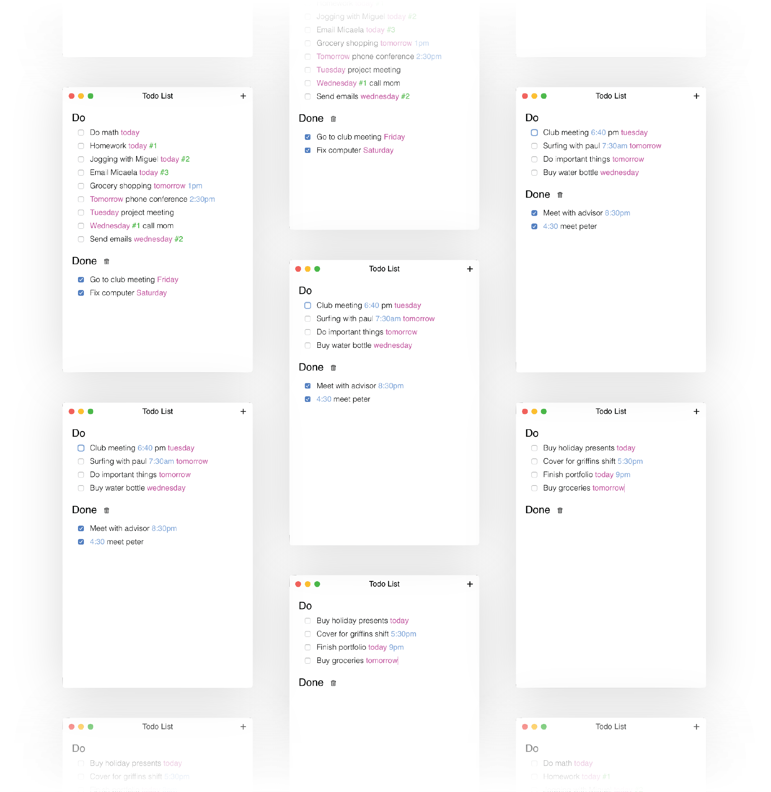

Tiny Todo
DESKTOP APPLICATION ENGINEERING
Creating a todo app that cuts out the hassle
by organizing your work for you
by organizing your work for you
TECH
React.js, ElectronTEAM
1 full stack engineer (me)TIME
February 2019 (1 week)The Goal
To quickly learn about developing for desktop with Electron while making a useful todo appThe Design
The main idea behind TinyTodo was that you should be able to write down nearly anything you have to do, and TinyTodo would know how to sort your items for maximum mental clarity. I saw this being best achieved through the recognition of dates and times, and by allowing users to input priority (i.e. #2). I decided that these functions should be made clear to the users intuitively, and thus I decided to implement text highlighting on application recognition of certain strings. Finally, I decided to have a “done” list that todo items would be moved to after completion. I saw this as having two functions, giving the user the option to undo an accidental click, and allowing users to see how many items they have completed, making the application a bit more satisfying to use.
